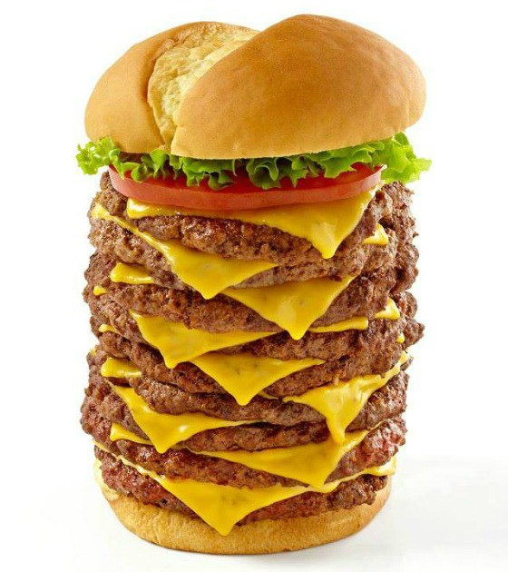
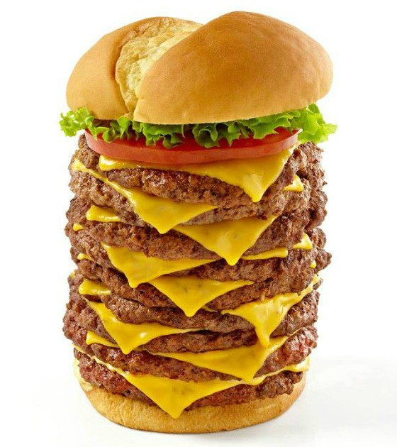

Cheeseburgers are the best food on Earth. Meat, check! Cheese, yes! Anything else you could possibly want? For sure! Cheeseburgers are good with any combination of foods or with just plain cheese. You can't beat the versatility! Yum Yum Yum!!

 
